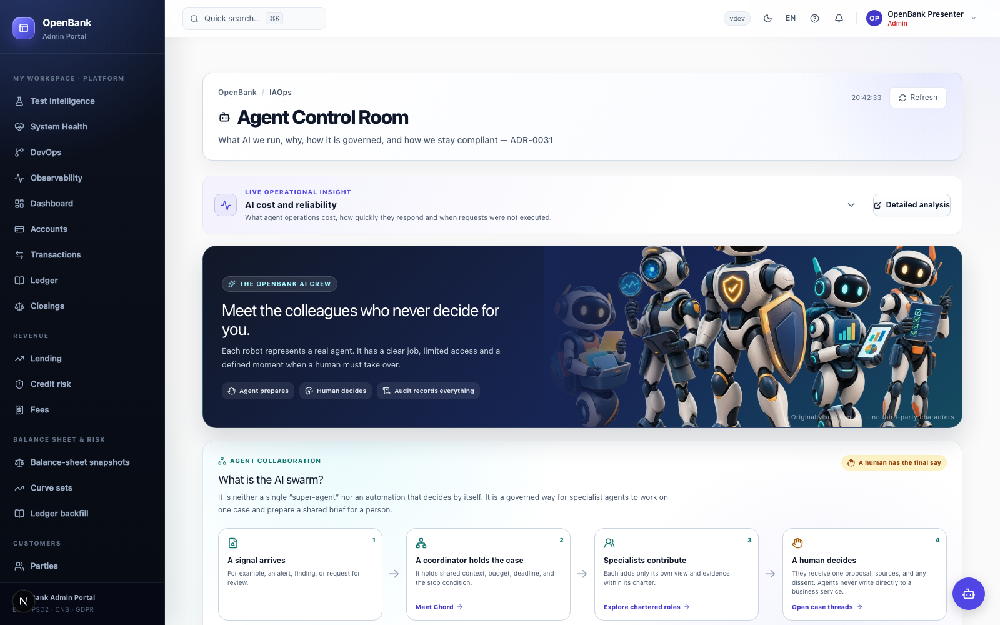

Public sandbox
Use demo data. Availability and data may change; the sandbox is not a banking service.
Inside OpenBank
From the first account to the balance sheet. Explore the business areas and contracts of a Bank as Code: versioned, self-describing services connected to governance declarations, tests and operational evidence.
The whole picture
Browse by business capability, then open the source. These editorial areas make the full module catalog easier to explore; they are not a count of deployed services.
Account lifecycle, balances, bookkeeping and interest.
Domestic and international rails, recurring payments and settlement.
People, companies, digital identity, delegated access and authentication.
Card lifecycle, processing and disputes.
Lending workflows and the shared risk engine.
Treasury and wealth-management modules.
Screening, fraud signals, sanctions and audit evidence.
Financial reporting, credit reporting and tax reporting.
Product definitions, customer products and billing.
Context, campaigns, incentives, loyalty and referrals.
Consent, PSD2 interfaces and third-party provider registration.
Notifications, communication, documents and statements.
The customer edge, admin portal and API gateway.
Governed tools, specialist agents, assurance and platform operations.
Analytical ingestion and simulation tooling.
Shared code, contracts, infrastructure and other supporting modules.
No match? Open the service catalog ↗ or browse the repository ↗.
Governed collaboration
Explore the Agent Control Room and the tools behind each role. Charters describe permissions; they do not prove that an agent is currently running.

Evidence, at the source
Open the corresponding portal surface for current evidence. This public page does not measure live health, cost, recovery performance or regulatory coverage.
Read the rules, architecture decisions and control mapping. Mapping a regulation is not a certification.
Open compliance ↗Explore how infrastructure cost is allocated to services and business flows, with evidence in the portal.
Open FinOps ↗Inspect recovery tiers and declared objectives. Targets and measured outcomes are different things.
Open continuity ↗Follow the service map, infrastructure and data lineage in the actual admin interface.
Open the service map ↗Portal links require sign-in.
An honest reference implementation
Use demo data. Availability and data may change; the sandbox is not a banking service.
A rail implementation or simulator does not mean a live interbank network connection.
Follow the roadmap and issues for implementation status and remaining work.
Read the roadmap ↗